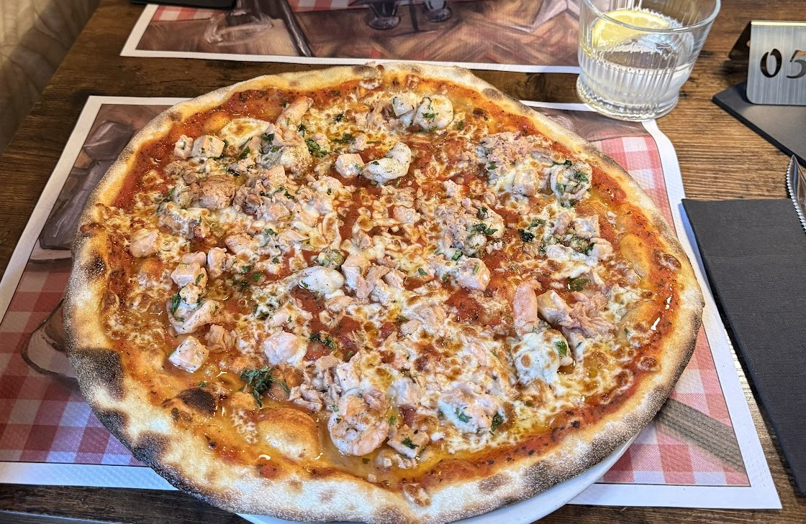
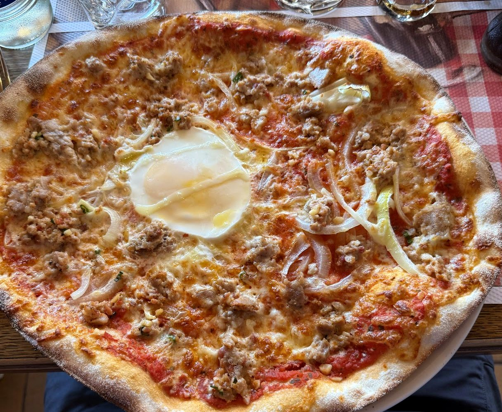
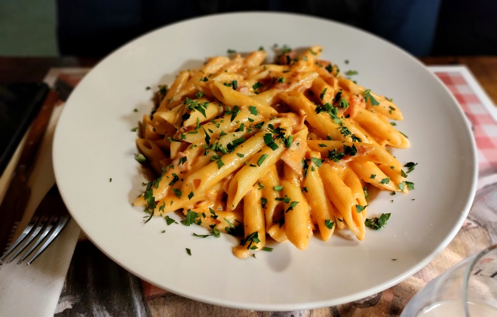
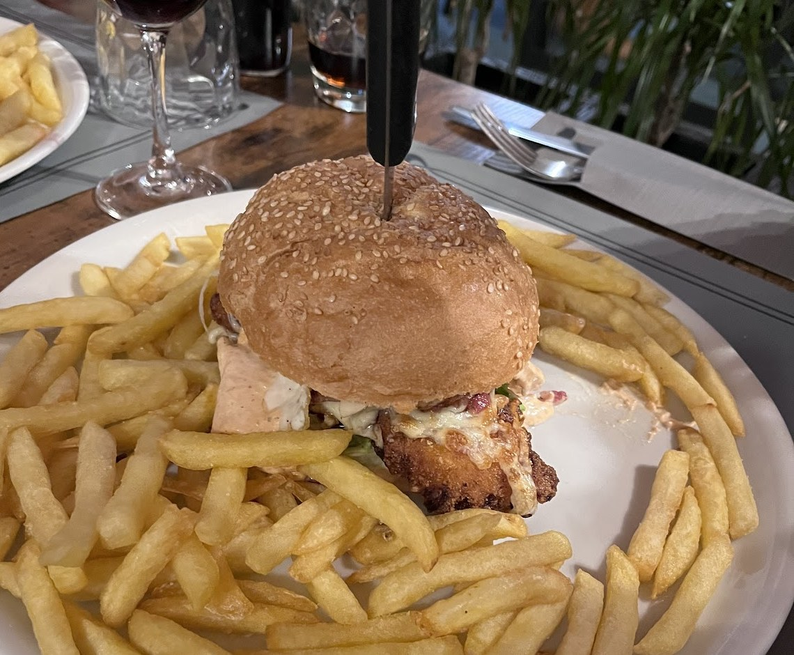
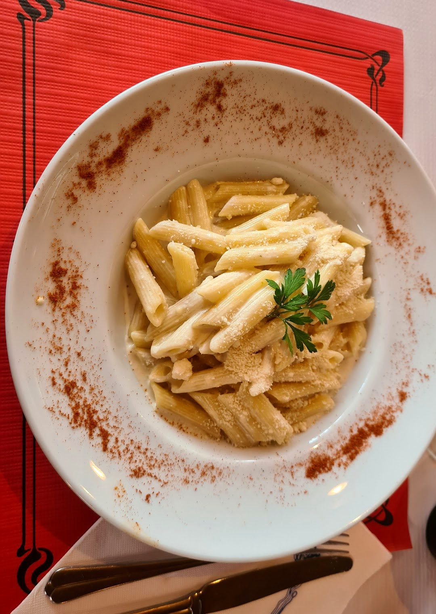
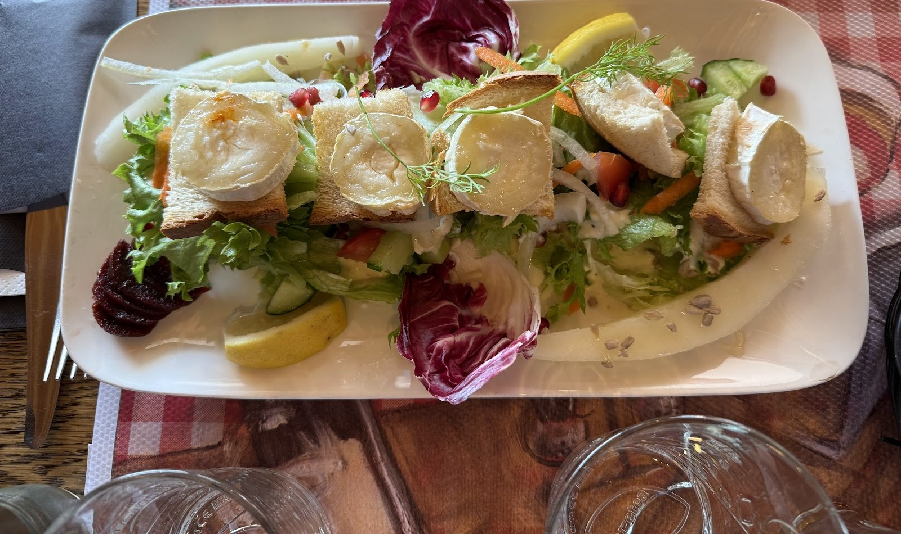
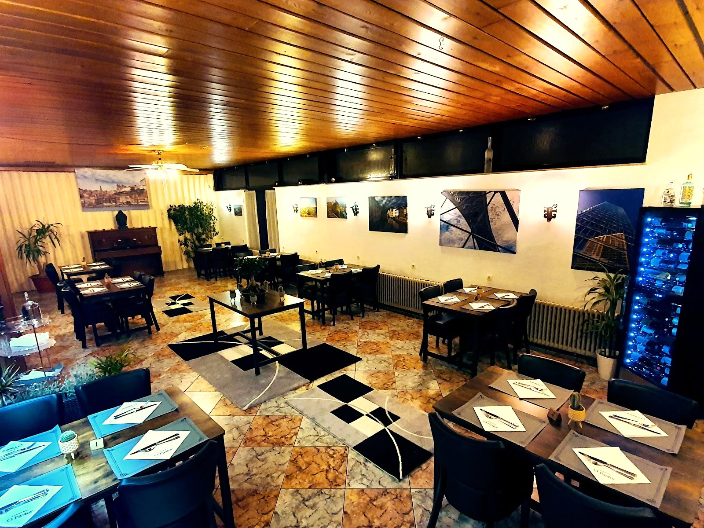

O Pastor
Pizzas à pâte fine, pâtes, burgers et salades, sous le plafond en bois ou en terrasse, à Consdorf.

La pizza,
à pâte fine.
Une pâte fine, un bord doré et gonflé, une garniture généreuse.
Pizza à l'œuf, pizza au saumon et aux crevettes : de grandes pizzas rondes.

Pâtes, burgers et salades





Une salle
chaleureuse.
Un plafond en lambris de bois, une cave à vin vitrée, des tableaux et photos aux murs, dont une vue de Porto.
Et dehors, une terrasse sur gazon, sous les parasols.

Extraits de la carte
Pâtes, burgers et salades, avec leurs garnitures.
Les pâtes
Les burgers
Avec frites, salade, tomate, oignons et sauce maison
Hamburger, chickenburger, veggieburger, fishburger
Les salades
Salade verte, oignons, carottes, concombres, tomate
Petite salade mixte, salade de scampis, salade de poulet pané, salade de thon
Nous trouver
L-6210 Consdorf